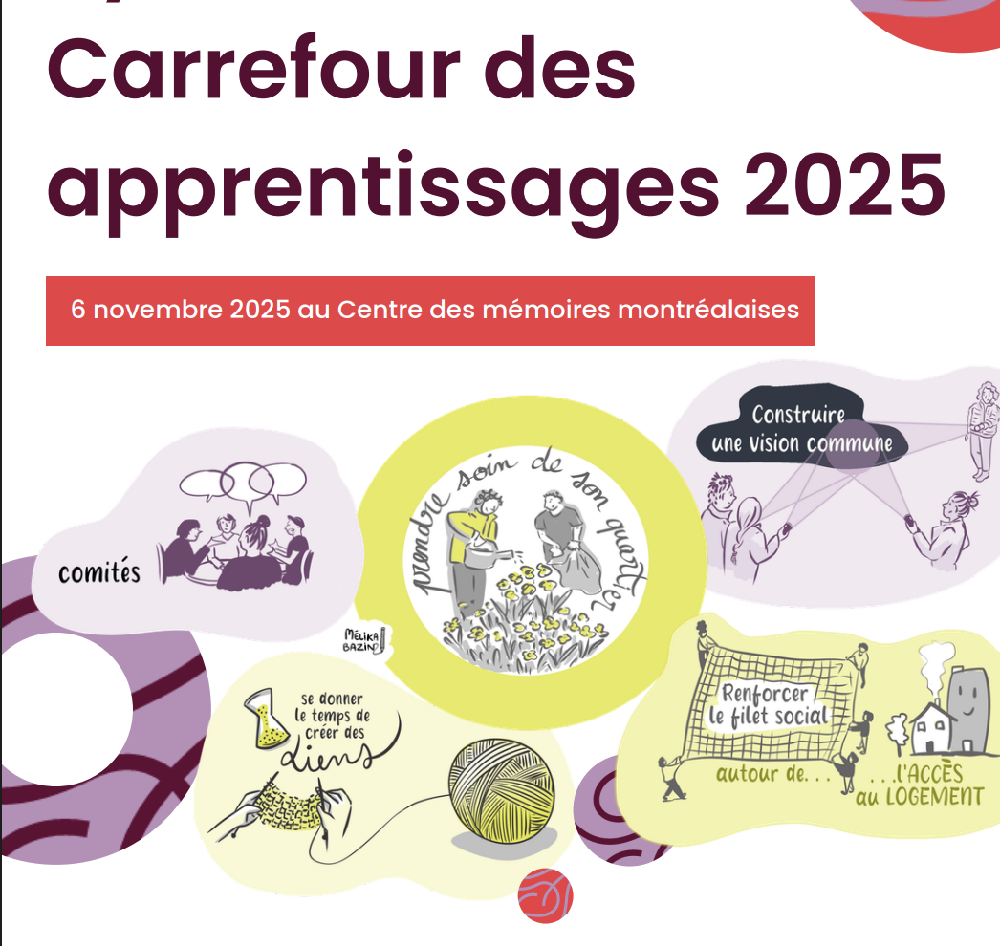

Research assistant
Learning and Knowledge Evaluation Research Team
Collective Impact Project – Centraide of Greater Montreal
Strengthening collective action to fight poverty and social exclusion in Montréal neighbourhoods

About
Launched in Montréal in 2015, the Collective Impact Project (PIC) is a Centraide of Greater Montreal initiative that supports neighbourhood-based collective efforts to fight poverty and social exclusion. Its approach combines flexible, long-term funding, support tailored to local realities, and shared learning across participating communities. After a first phase (2015–2021) involving 17 neighbourhoods, PIC launched a second phase in 2022, expanding to 31 Montréal neighbourhoods. This phase aims to consolidate local collaborative dynamics and strengthen communities’ capacity to act collectively on issues that affect them. PIC-supported initiatives address many dimensions of social development, including access to housing and food, improvements to living environments, social inclusion and citizen participation. By fostering cooperation among community organizations, institutions and residents, PIC helps generate collective responses to social challenges across Montréal neighbourhoods.
Methods
The Learning and Knowledge Evaluation Team uses an action-research approach to produce knowledge that supports continuous program improvement and a better understanding of place-based collective action. The evaluation is participatory and iterative, drawing on knowledge produced through the program and existing spaces for exchange. It is based on the analysis of more than 150 documents produced between 2022 and May 2025, including follow-up reports from the 31 participating neighbourhoods, research interviews, funding documents, activity reports and governance records. Qualitative thematic analysis identified the program’s main outcomes, challenges and enabling factors for collective action. Comparative analyses were also conducted to examine variations according to neighbourhood trajectories, length of participation in the program, financial resources mobilized and social issues addressed.
Contribution
I contributed to several stages of PIC’s mid-term evaluation, including follow-up meetings with Montréal neighbourhoods, data collection and qualitative analysis, and drafting the evaluation report. My work focused primarily on identifying the outcomes of collective action, issues related to citizen participation and governance, and the factors that enable or hinder collective processes in neighbourhoods. I also helped interpret and discuss the findings and formulate recommendations. This experience gave me a deeper understanding of local social development and of relationships among community organizations, residents and institutions.
Related outputs and publications
- Heck, I., Alagy, C., Arnaud, J. (2026). Synthèse du Carrefour des apprentissages 2025. Collective Impact Project, Centraide
- Heck, I., Arnaud, J., Alagy, C. (2026). Le pic en mouvement : ce qu’on apprend de la phase 2. Bilan mi-parcours. Collective Impact Project, Centraide
- Arnaud, J., Heck, I., Alagy, C. (2024). Synthèse du Carrefour des apprentissages 2024. Collective Impact Project, Centraide